Full display parity remains unqualified. Six primitive interiors pass; strict edge differences and cortex fallback latency remain. These are raw same-scale captures without registration or recoloring.
Scope and reproduction · Checks · Review · Artifact hashes · Earlier gallery
Left: pinned SurfViewJS. Middle: ScalaFIM Three.js. Right: browser raster. The actual JVM raster images are byte-identical to the right panel. Core, halo, caps, overlap and occlusion pass fixed source-derived interior masks. Edge pixels remain different.
Pixel receipt · Actual JVM receipt
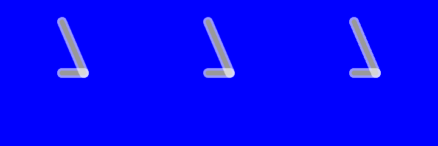
Pixel receipt · Actual JVM receipt
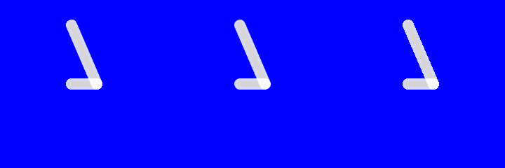
Pixel receipt · Actual JVM receipt
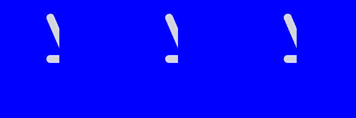
Pixel receipt · Actual JVM receipt
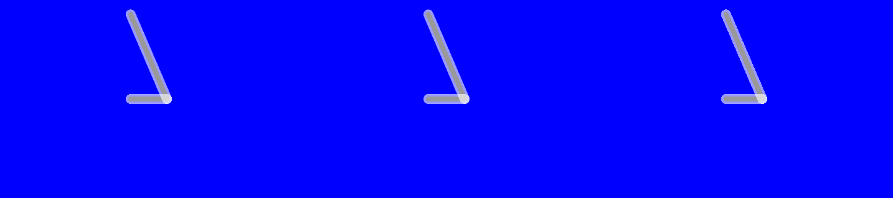
Pixel receipt · Actual JVM receipt
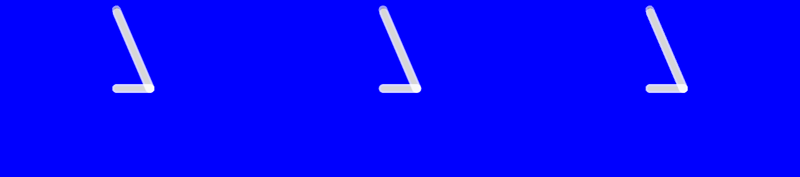
Pixel receipt · Actual JVM receipt
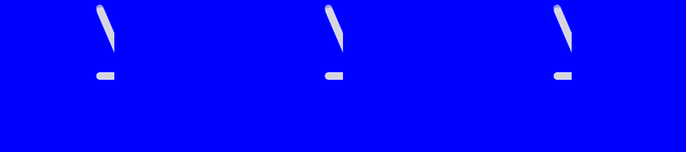
At 600×450, zoom 1, 1.5 and 2: reference, Three.js, raster. Native warm medians dropped from 172–188 ms to 86–90 ms with identical PNG bytes. Actual JVM raster has identical pixels to browser raster; both still fail strict reference edge comparisons.
Cache before/after measurements · JVM lifecycle and timing · Negative controls
Browser receipt · Actual JVM receipt
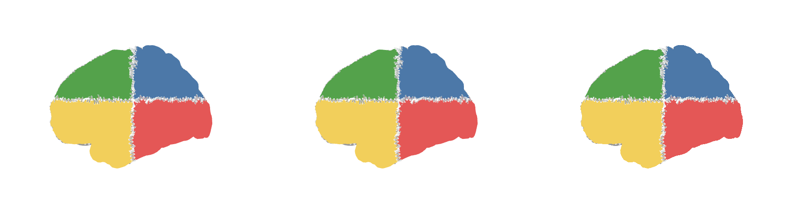
Browser receipt · Actual JVM receipt
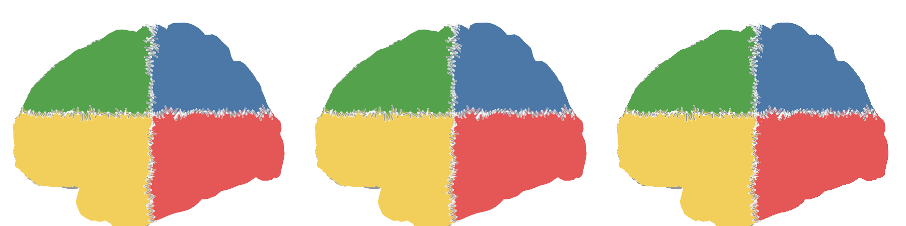
Browser receipt · Actual JVM receipt
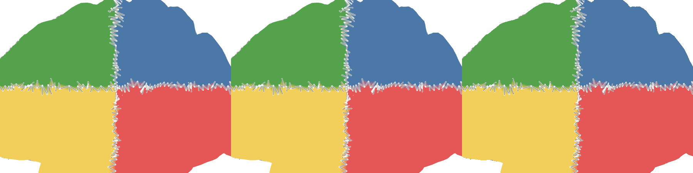
Left: reference public viewer export. Right: actual JVM publication export. Mapping endpoints, interior palette samples and threshold metadata are checked. Layout and surface transparency differ visibly. All raw full-frame comparisons fail; these plates do not qualify C10/C12.
Raw pixel differences · Reference key checks · JVM publication receipt
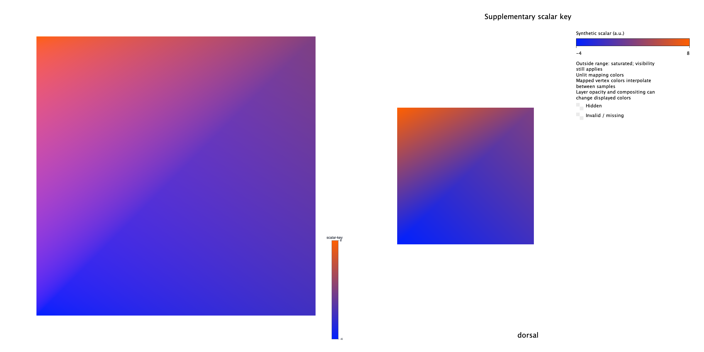
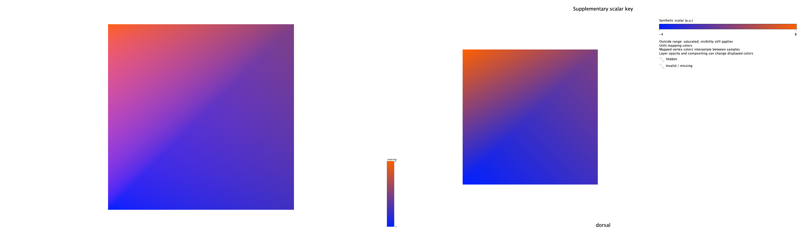
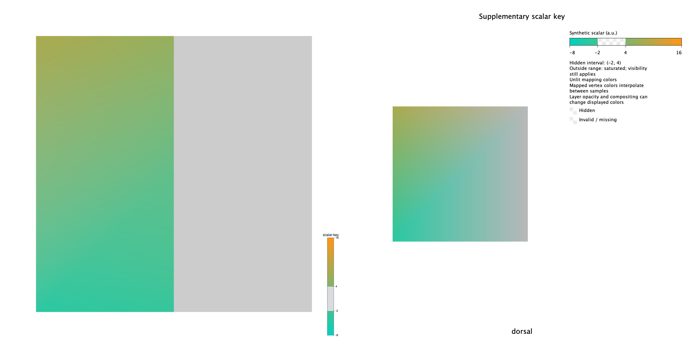
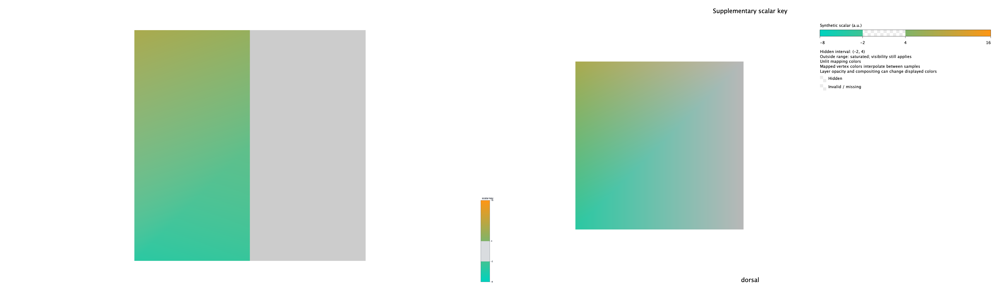